A critical, per-icon evaluation of all 159 animated canvas tiles (the procedurally
drawn (ctx,t) icons previewed in the Dev Panel Icons tab), plus a global look at
cohesiveness and a roadmap to higher-quality, playful, WC3-style idles. Each was rendered headlessly
(Playwright → the real browser canvas), reviewed by a per-module art-director agent at 8–12× zoom
against the source, and cross-checked with objective motion/centering metrics.
The static art is the strong part. All 159 icons share one disciplined "glossy sticker" language — a dark outline, a consistent top-/top-left key light, gradient-shaded bodies, and a soft elliptical ground-shadow — so at rest the library reads as one cohesive family. The first-draft weakness is almost entirely motion. The set feels janky and cheap not because the drawings are bad but because nearly every icon fakes life the same few ways — a sliding glint, a glow pulse, a twinkle, some rising particles — laid over a body that never actually moves, and because none of the 12 animation principles (anticipation, squash & stretch, overshoot, eased timing, follow-through, secondary motion) are applied. A minority of icons are genuinely alive; they should become the benchmarks the rest are rebuilt against.
The patterns that repeat across modules — fix these once and dozens of icons improve.
The object's geometry never deforms; life is faked with a glint/sheen sweep, a glow pulse, twinkles, or particles painted over a frozen shape. Pervasive across ores (all eight have a measured 0 px body delta), treasure, weapons (glint-only), the gem trio, drinks (rigid vessels), furniture (lamp/table/mirror/bookshelf never move — only their light does), nature (light-cycling), festive (holly/candy-cane), and several instruments. Fix: animate the OBJECT first (breathe / squash / bob / tilt) and demote the overlay to a secondary accent.
spell_wind, reef_starfish, astral_galaxy, arcane_pentacle, instr_bell, instr_tambourine, the weapon pendulums and bld_windmill (constant-velocity) all rotate the entire drawing about one pivot. It reads as a spinning logo/hubcap, not character — and on symmetric shapes (pentacle, starfish, galaxy) it's barely perceptible despite a high motion score. Fix: articulate (per-part motion, traveling waves, sensible pivots) instead of rotating the whole sprite.
On the board these are indistinguishable from still images: bld_tower (0.1), bld_barn (0.17), drink_milk (0.57), furn_bookshelf (0.61), ore_crystal_vein (0.87), festive_holly (1.21), cozy_mailbox (1.22), treasure_map (1.63), weapon_dagger (1.69), weapon_mace (1.73), arcane_potion_blue (1.75), gem_emerald, arcane_runestone, wtool_nail. Several have animation code that is simply sub-perceptible at size.
astral_shooting_star and weather_comet are completely EMPTY at frame 0 — the subject only exists mid-flight as it streaks across and off the canvas. A tile must always show its subject at rest. Fix: park the subject in-frame and make the streak a periodic event.
Almost every animation is a pure linear Math.sin(t·f) with no eased in/out, no anticipation wind-up, no overshoot/settle, no follow-through/overlap, and no squash & stretch. This single gap explains most of the “janky” feel. It is the highest-leverage thing to fix set-wide.
Ground-shadow ellipses stay frozen while subjects bob, hop, and breathe, so contact is broken (pets, crops, drinks, …). Fix: couple shadow scale/offset inversely to vertical motion — the one cheap change that grounds everything.
Everything is pinned to a y=22 shadow baseline regardless of subject height, so short subjects float with dead air above: treasure_gold_bars (31 u empty on top), wtool_drill / saw / wrench (off ~8–13 u), instr_fiddle (off_x 9), arcane_magic_dust (off_x 7.1), crop_peas (off_y 8.4), drink_tea (off_y 9.1). Fix: center each subject's bounding box; don't pin to a shared baseline.
bug_dragonfly is a thin stick next to bug_snail's boulder; weapon_dagger is half the mass of the shield; the coffee/tea saucers read ~50% bulkier than the narrow drink glasses. Establish a target footprint band so a mixed board reads evenly.
A high motion number is NOT proof of good motion — a rigid rotation or a bright sliding glint rectangle inflates pixel-change while reading as lifeless. Judge perceived character, not the metric. (The metric is still great for finding the dead end of the scale.)
treasure's glintSweep() emits a hard-edged rectangle that leaks past loose clips (a compositing-glitch look on coin_stack & chest); sweepPhase() in ores/treasure is a triangle wave that hard-resets (a teleport, not an eased return); buildings' flicker() only swings alpha 0.82–1.0 — imperceptible, yet it's the only animation on tower & barn. Fixing these helpers cleans up many icons in one move.
Incommensurate sine frequencies or sawtooth resets break seamless looping (arcane_crystal_ball spin, the candle, several glint sweeps). Fix: drive loops off phase = 2π·f/loopLen so they tile exactly.
Glint-sweep + twinkle + glow-pulse appear in nearly every module, so even though the static art is nicely varied, the approach to motion feels samey across the whole set. Variety of gesture (peck, snip, ring, drip, flutter, jet) is what's missing.
A minority of icons hit the bar and should be the reference for the rebuild:
crop_sunflower, pet_dog, pet_frog, bug_firefly, reef_jellyfish, weapon_staff, instr_drum, drink_water, bld_windmill, bld_watermill, cozy_wind_chime, cozy_birdhouse, furn_fireplace, furn_clock, spell_arcane_missile, spell_shield_bubble, weather_sun_cloud, astral_eclipse, arcane_candle, arcane_crystal_ball, gem_opal, dish_honey_pot
The target is playful, characterful idle motion with Warcraft-3 unit-idle energy — each idle a small gesture appropriate to the subject (a chicken pecks, a tree breezes, a gem glints-and-sparkles, a fish bobs & flicks, a bell rings). Idles need not be uniform, but they must share one consistent style and energy level. Three rules turn this set from first-draft to compelling:
Shared standards to adopt set-wide: a small easing/helper library
(easeInOut, easeOutBack for overshoot); a “shadow couples to vertical
motion” rule; a centering + target-footprint pass; fixes to the shared glintSweep /
sweepPhase / flicker helpers; a “never blank at rest” rule; and a
“loop by phase” rule for seamless cycles.
Every icon's rest frame, grouped by module — the static set reads as one family (shared outline, gloss, top-left light, ground shadow). Motion energy is what varies and what to unify.
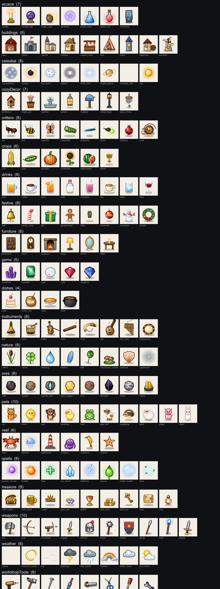
Live looping previews. Each card: verdict · motion class · quality/10 · 56px
readability · objective chips · the key defect → fix. Two modules (crops, nature) also have full
source-line deep-dives saved under reports/.
Coherent gradient-sticker art; the split is motion energy — sunflower/wheat/peas deform, while watermelon/pumpkin/corn are near-frozen bodies under a sliding glint.
Top priorities: Kill the frozen-body+glint pattern (melon/pumpkin/corn) · couple every shadow to the subject · fix peas/wheat framing and add eased overshoot.
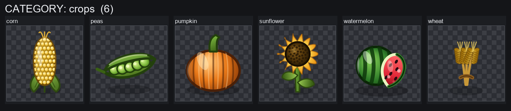
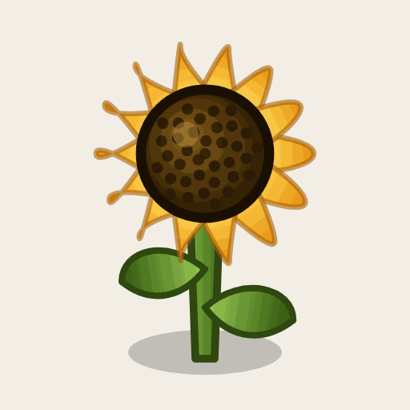
Head shears off the stem (two sway pivots) and the bee-sparkle reads as a glitch; anchor the head to the stem tip, add eased overshoot + a petal-fan wave.
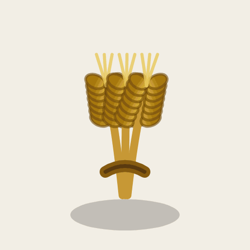
Sits low with starburst awns that look like noise and a rigid clump sway; re-center, curve the awns, add a per-stalk traveling-wave bend.
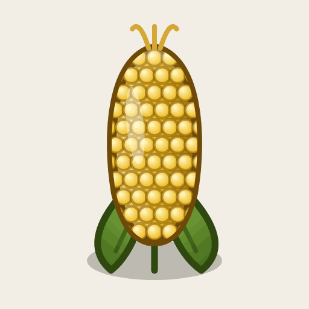
Cob near-frozen; only a hard glint rectangle slides over it. Replace with an eased nod + a fake axial roll of the kernel grid.
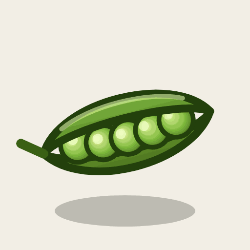
Whole pod rigidly bobs/tilts and floats low (off_y 8.4); raise it, animate the pod opening/closing at the hinge with overshoot.
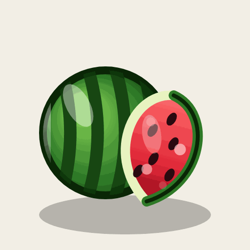
Beautiful art, 100% static except a sliding glint + tiny sparkles; add a springy wobble-and-plop (squash/overshoot) and demote the glint.
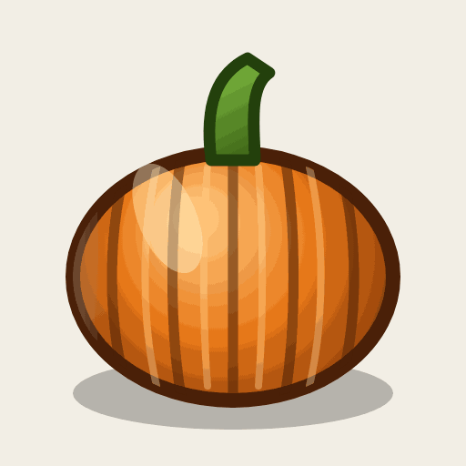
2% breathe is invisible and the rib glint slides over a frozen body; add a heavy squash-settle that bulges the ribs and drives the highlights.
Calm/sleepy and too samey — 6 of 8 are light-cycling on a static body with no real deformation; leaf & cattail rotate as one welded piece.
Top priorities: Replace light-sweeps with real deformation · articulate the leaf/cattail (pivot + follow-through) · unify one light direction + a shared sparkle accent.
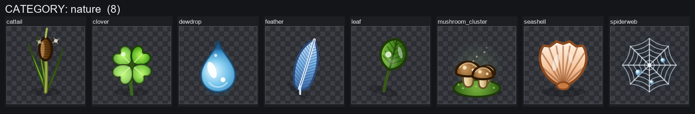
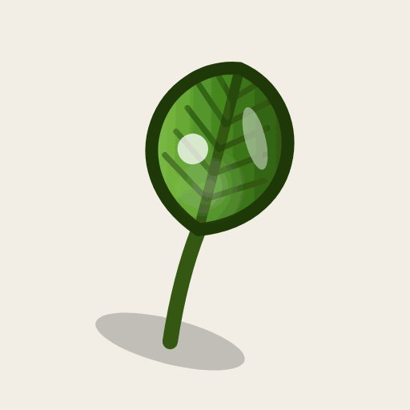
Pivots from its center (wags, doesn't flutter) with stuck-on highlights; pivot at the stem base, add a cantilever tip-curl + leaf twist.
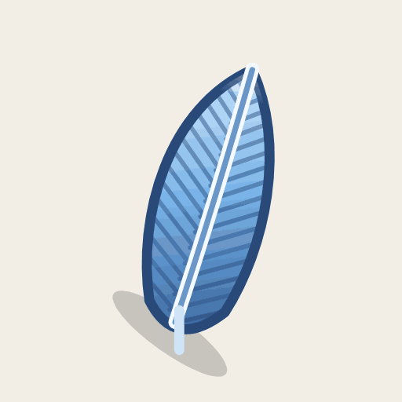
A smooth balloon vane that tips/slides as one piece; part the edge into barbs and run a traveling ripple down the vane with an edge-on flip.
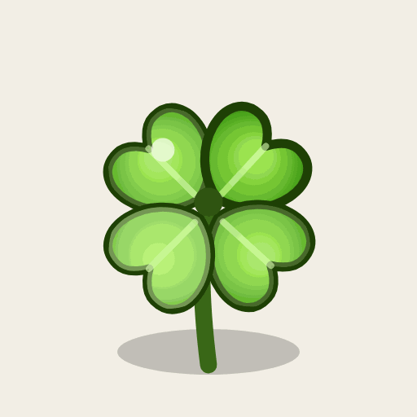
Leaflets are frozen; only a wash moves. Make each leaflet pop in sequence as the wash reaches it, ending on the lucky-sparkle.
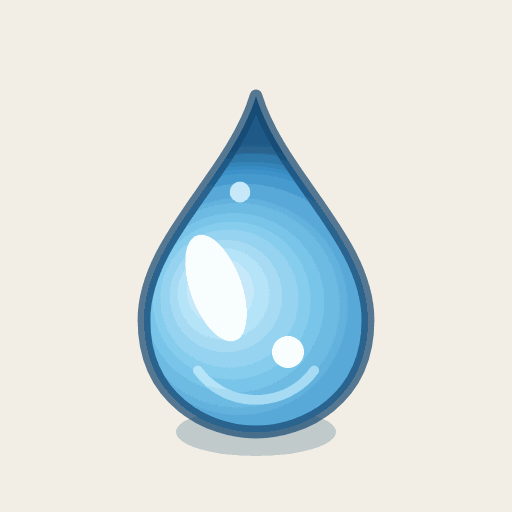
Good drip cycle, but the body barely jiggles and never necks/pinches; add squash-stretch + a real surface-tension pinch + a ripple.
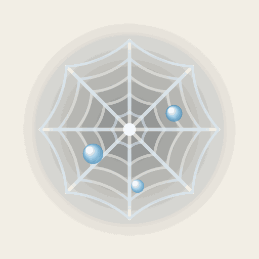
Rigid octagon that scale-shimmers as one ring; ripple a traveling wobble out from the hub and twang a strand when a dewdrop drops.
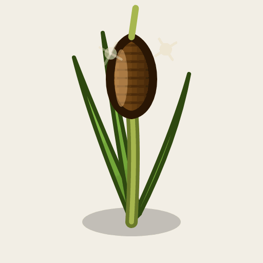
Head/reed/blades sway as one rigid body; lag the heavy head behind the reed (follow-through) and shed fluff at the sway peaks.
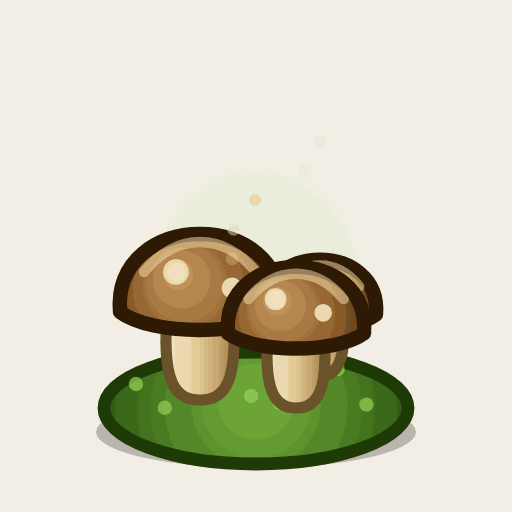
2% breathe is invisible and it sits low; give each cap a staggered squash-bob and an occasional spore puff.
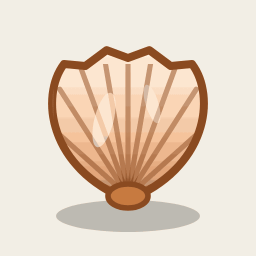
Body is 100% static under a flat sheen wipe; make it a living clam that opens/closes at the hinge with the rim lobes rippling.
Strong cohesive static, but motion splits into busy (bee/butterfly) vs essentially static (ladybug/caterpillar/ant) — and the 'busy' ones are width-scale flaps or rigid translation, not articulation. Amplitudes tuned far too small.
Top priorities: Triple every motion amplitude & stop translating whole sprites · fix the bee fuzz-fence · re-center/re-scale the dragonfly.
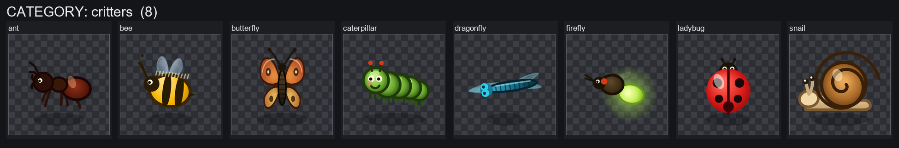
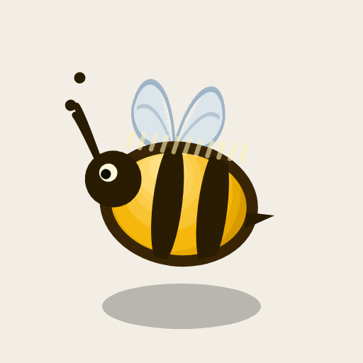
Wing 'flap' is a width-only squish and the fuzz tufts render as a beige barcode fence; rotate the wings, fix the fuzz, add a hover squash.
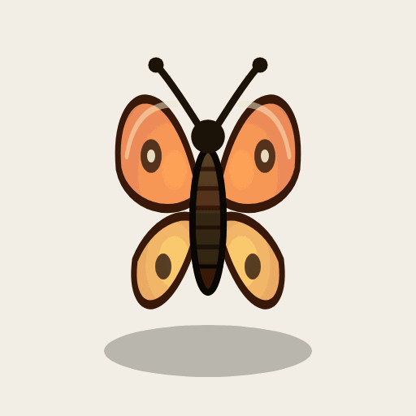
Wings flatten horizontally like a venetian blind (collapses to a sliver) and the palette is one muddy orange; foreshorten with tip-rotation, lift the wing roots.
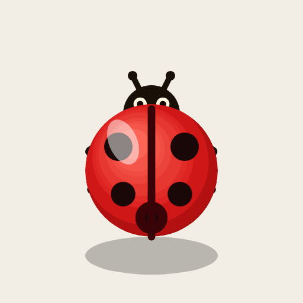
Gorgeous static, but the shell-open is crushed to invisible and a spot tears at the seam; commit to a real wing-flash + fix the per-half spot/gloss.
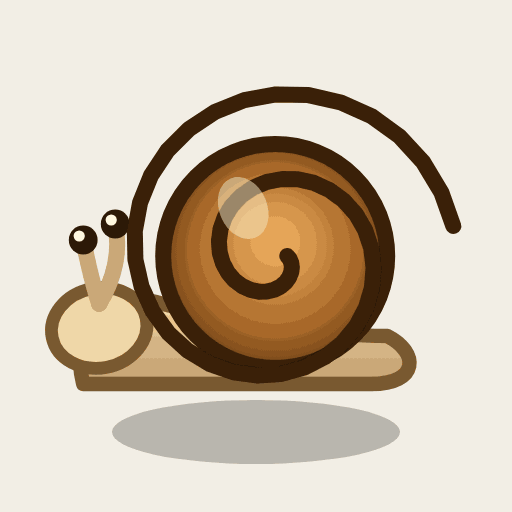
Whole snail slides in place and the rigid shell wrongly squashes; confine squash/stretch to the foot, keep the shell rigid, add a traveling shell shimmer.
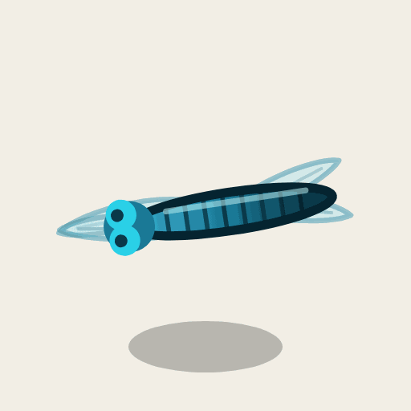
A 3px-thin body that darts as a rigid stick and sits low (detached shadow); thicken/raise/re-center it, render wings as ghosted blur, dart with anticipation.
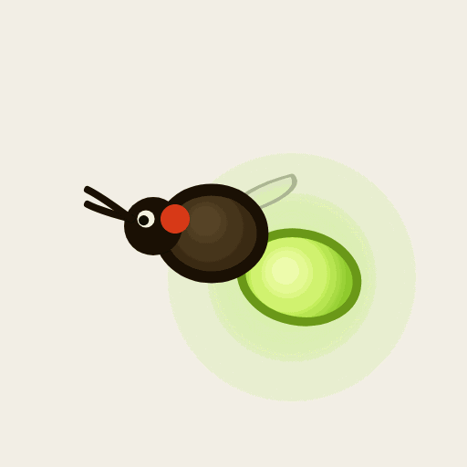
Best motion (breathing glow) but the body just translates, the glow is off-center from the bug, and a missing shadow floats it; pump the abdomen with the glow + a flash spike.
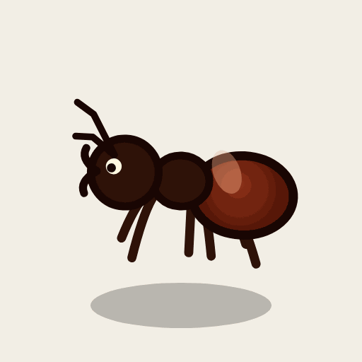
The sophisticated tripod gait is invisible (thin dark legs on a jiggling body); thicken/brighten the legs, exaggerate the swing, bob the body with the gait.
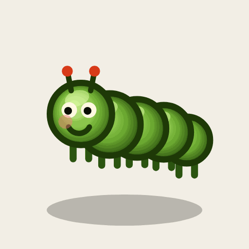
The most charming static, but the hump wave lifts only 1.6/64u (perceptually frozen) and the eyes are asymmetric; add a real bunch-and-stretch inchworm accordion.
Excellent, disciplined chibi craft; motion is the weak, samey part — every mammal is the same recipe: a rigid whole-body vertical bob + one wiggling appendage, with no torso squash, anticipation, or overshoot. Several bodies are fully frozen.
Top priorities: Kill the rigid whole-body translate — add torso squash & stretch · animate the frozen bodies (lamb/piglet/goat/hedgehog) · make shadows react + add eased beats.
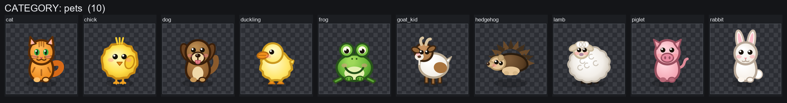
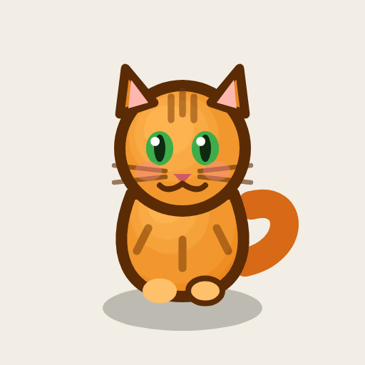
Sub-pixel breathe + a tiny tail; lead with a slow eased tail-flick (slow lift, snap, settle) + a real breathing torso.
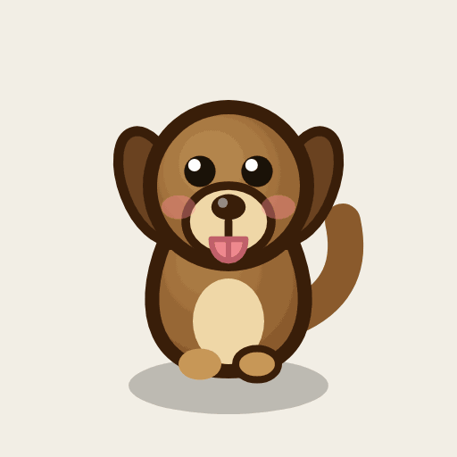
Genuinely alive (fast tail wag) but the body rigidly bobs and the floppy ears read as horns; add a panting torso squash + bursty wag + head-tilt.
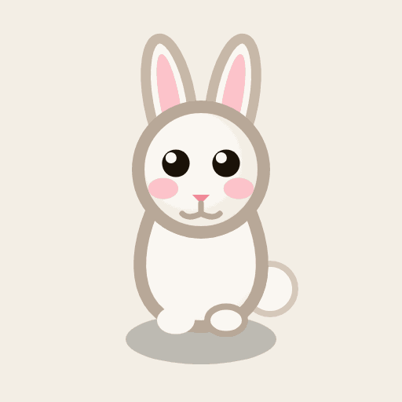
Textbook rigid bob — the whole rabbit translates ±6px with only 10% squash; rebuild as a real hop (crouch anticipation → stretch launch → overshoot land).
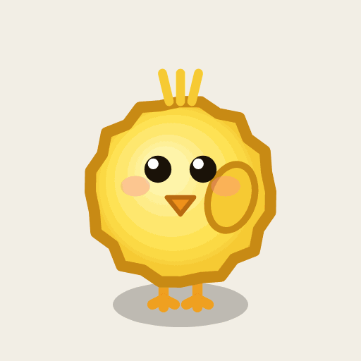
Good fuzz/wing life, but the peck is the whole body dropping with no anticipation; add a peck-and-perk with squash on contact + a wing shimmy.
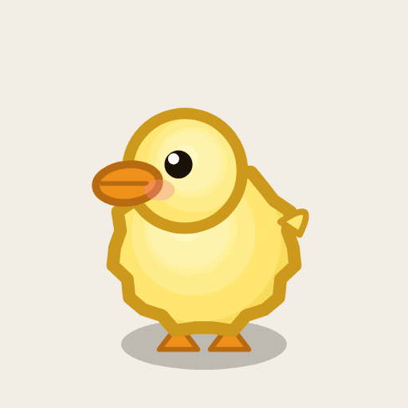
Waddle is a rigid rock+slide of the whole body; replace with an alternating-foot weight shift (plant one foot, step the other).
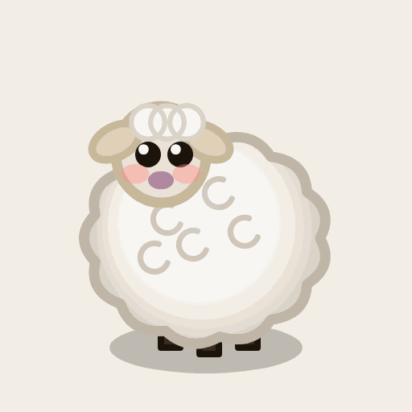
Dead wool body (1% breathe) with a talking head; add a deforming wool jiggle + a graze dip + a wool-shake.
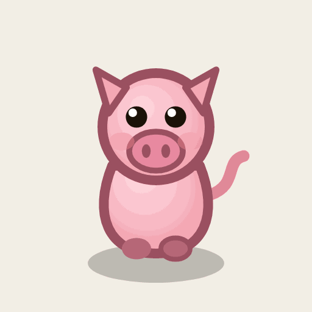
Frozen torso with a wiggling head; lead with the curly tail, add a breathing/bouncing body + a snout snuffle.
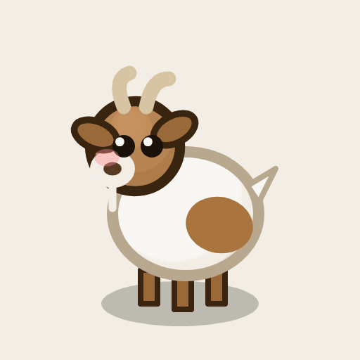
Worst composition (head jammed into the body, cross-eyed) on a dead torso with a loose-bobbing head; fix the art first, then a head-butt tease.
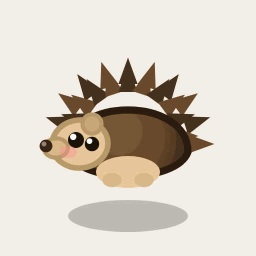
Best static craft, near-zero motion (only spike tips lengthen 1.2px); add a breathing dome + a nose sniff + a startled spike-bristle beat.
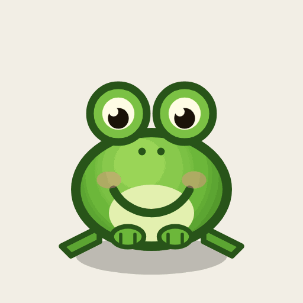
One of two with real squash/stretch (the crouch); deepen/vary it, add eye swivels + a telegraphed mini-hop with overshoot.
Two sub-families (warm crustaceans + cool jelly/octopus) that mostly move via a global transform of a rigid body; only the jellyfish truly deforms. No easing/anticipation anywhere.
Top priorities: Kill the rigid transforms (starfish spin, body translates) · add the 12-principles vocabulary · fix the lighthouse beam + give the jellyfish a shadow.
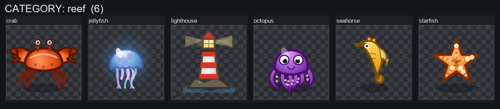
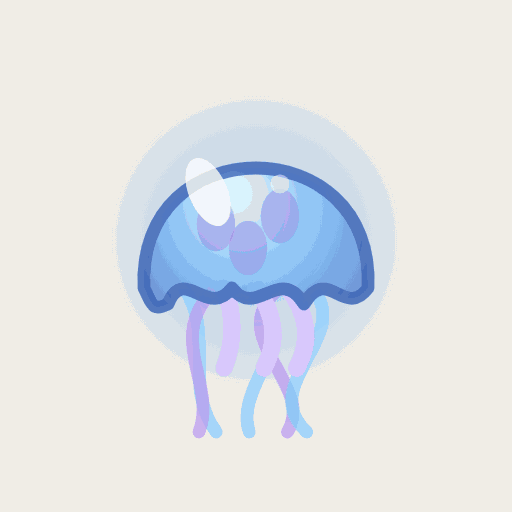
Best deformation in module (bell squash + tentacle wave) but metronomic + missing a shadow; make it an eased jet-propulsion pulse, add a shadow for cohesion.
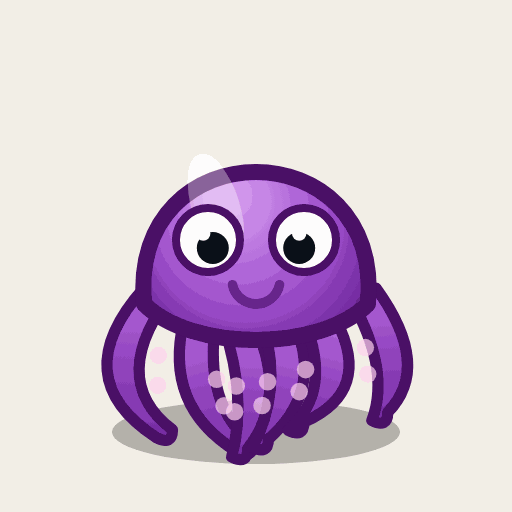
Most character, but tentacles barely move (<20% tip deflection), the head-gloss reads as a horn, and it sits low; amplify + curl the arms, fix the gloss, re-center.
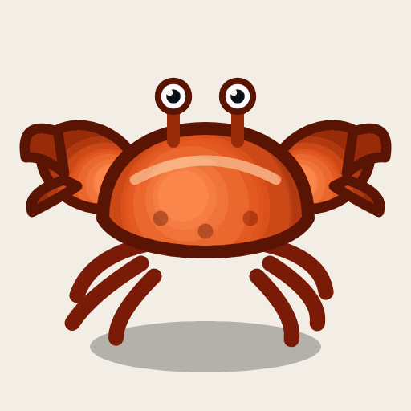
Whole crab rigidly slides side-to-side with buzzing flailing legs; replace with a tilt+alternating-leg gait + a staggered single-claw threat display.
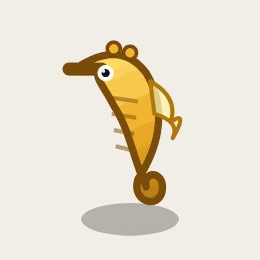
Dead body that rocks like a center-hinged metronome while the fin buzzes at freq 14 (8× too fast); flex the S-spine, slow the fin to a wave, animate the tail.
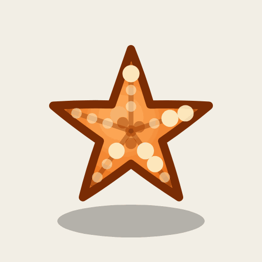
Pure rigid 360° spin (a pinwheel) burying a nice twinkle wave; kill the spin, add per-arm curl + a slow tilt so the twinkle shows.
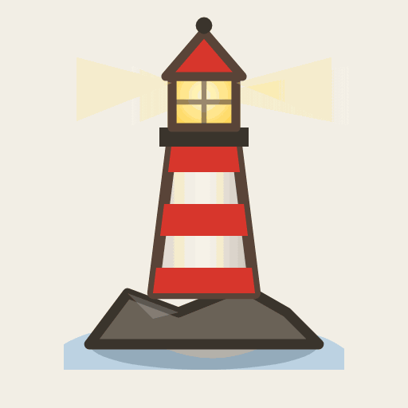
Beam is two flat triangles flapping like bat-wings (khaki, not light) with a z-order bug over the roof + doubled static beams; rebuild as one front-sweeping beacon flash synced to the lamp.
Strong craft but FIVE are recolors of one grey ball, and all eight have a measured 0px body delta — every 'animation' is a glint wipe + sparkles painted on a statue.
Top priorities: Animate the body (a breathing scale + settle so the silhouette moves) · fix the floating overlay cracks · differentiate the idle per material.
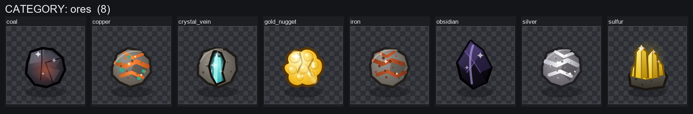
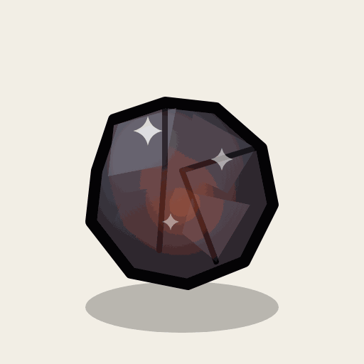
Body 0px motion; the ember is a slow bruise-pulse and the cracks float on top as sticks; add a breathing ember + a crackle pop, drop the twinkle-stars.
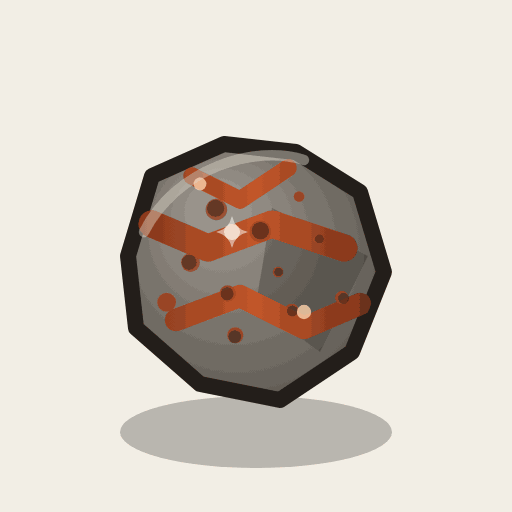
0px body, only a glint wipe; pulse the rust veins in a traveling wave that flares each specular, add a breathing scale.
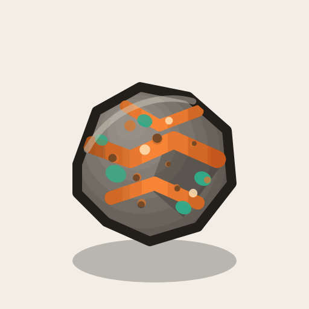
0px body; the nice verdigris shimmer is buried; bloom the patina organically + breathe the body + flare veins on the sweep.
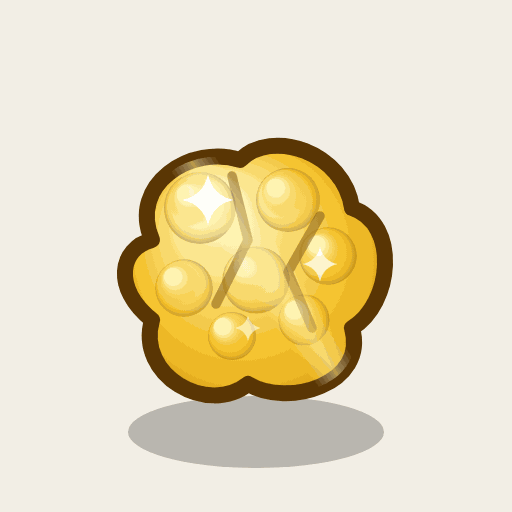
Liveliest ore (dual sweeps + wandering twinkle) but pillow-shaded bumps + 0px body; fix to one light, add a squash-jiggle, make the twinkle a 'ping'.
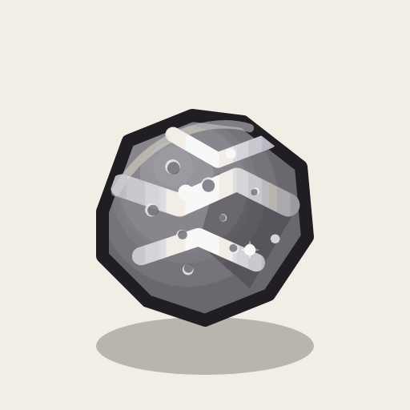
0px body, low contrast; flash the streaks as the mirror-bright sweep crosses them + add a breathing scale + a cool rim.
0px body; the sheen teleports at the seam; add an eased tilt-sway of the shard + a caustic tip-flare + a refractive second sheen.
Crystals 0px (only a glow throb + tip twinkles); push the per-crystal shimmer into a traveling wave + breathe + a drifting spark; re-render the muddy base.
Deadest ore (0.87) — only the cavity glow breathes; make the geode 'awaken' (glow bleed onto the rim + shard shimmer + caustic flare) + a 1.02 body breathe.
Really two mini-sets that don't share a language. The gem trio (ruby/sapphire/emerald) is near-static glint-only; opal/amethyst & the food dishes are more characterful.
Top priorities: Give the gem trio a dip→snap→overshoot 'show-off' with a glint FLASH · fix soup steam (invisible) + stew's soap-ring bubbles · unify gem vs dish visual weight.
2.5% breathe is invisible; the only motion is a slow crawling sheen + a centerline stripe-facet; add a dip→snap→overshoot 'show-off' with a hard glint flash.
Same as ruby, but the dark-bottom gradient swallows the faint sheen; raise the shine intensity + add the show-off rig (out of phase with ruby).
Deadest gem — a faint sheen sliding over a flat green table; add a ±5° rock + a sequential step-facet flash.
Has a glow pulse but never 'does' anything (and the glow is a circle on a tall cluster); race a pulse up each prism tip + a per-prism sway; clip the glow.
Best motion (drifting hue-shift flecks) but the flecks read as soap bubbles + rainbow-disco hue; tighten to small angular flecks, constrain hue, add a periodic fire-flash.
Steam is invisible (alpha 0.5, ~9% coverage) and the bits/ripple are sub-pixel; use fat soft steam plumes + a visible surface undulation + a simmer bubble.
Bubbles render as hollow soap-rings (dark-edged) and steam is invisible; fill bubbles bright with a pop-ring, undulate the molten surface, add plumes.
Best dish — a great stretch-drip, but the strand snaps back at the loop seam; pinch it off cleanly + a pool ripple on detach; let the dipper participate.
Cake body is 100% static with an orphan candle-glow floating over the cherry; add a fresh-baked jiggle + either draw the candle or drop the glow.
Lovely gold gloss, but the shared glintSweep is a hard rectangle that leaks past loose clips, everything is pinned to y=22 (short subjects float), and bodies are static.
Top priorities: Re-anchor vertical framing (don't pin to y=22) · fix the glintSweep helper (feather + tight clip + lower intensity) · add real body motion (settle/bob/tilt).
Most alive (glow + sparkles) but the coins are bubble-wrap and the glint clip shows hard rectangular seams over them; clip per-coin circles + jostle the coins.
The glint clip is a loose rect that hangs off into empty space (dirty-rect glitch) and the stack is off-center; tighten the clip + recenter + wobble the top/lean coin.
The glint washes the gold to chrome and the bow is a flat disc; lower the glint intensity, model the bow as a torus, dangle/turn the key.
Static body with blinking gems, floats a bit high; add a majestic bob+tilt with the ruby flaring at the top.
Best idea — a glint that traces the band — but the body is static and sits low; rock the ring to show the stone, sync the gem bloom to the band-glint.
Best gloss, but the drink bob is sub-pixel and it floats low/undersized; slosh the liquid surface (tilt + roll) and scale up.
31u of dead air on top (worst framing) on a glint-only dead pile; recenter, add a top-bar drop-and-settle that nudges the pair.
Reads as an inverted fan, not a pile, and sits low; re-cluster into a heap, sweep one shared light across firing each gem, add a settle jitter.
Reads as a lumpy sack/ravioli (only the red X reads) and the flutter puffs it like a balloon; redesign as a flat unfurled sheet that ripples like paper, ping the X.
Disciplined glass language, but the vessels are 100% rigid — only the contents move, and energy ranges from genuinely alive (water) to dead (milk).
Top priorities: Give every vessel a subtle bob/tilt so none reads as a statue · make milk actually animate (its shimmer is occluded) · normalize footprint + boost contents-motion size.
Best steam but parallel ribbons + a comma-handle + a static body; offset/curl the wisps, add a heat-breath bob, close/thicken the handle.
A single wisp leaves a dead seam (no steam at frame 0) + a barely-swinging tag; add a 2nd wisp + a real pendulum tea-bag with follow-through; sits low.
Bubbles + foam motion are sub-pixel; enlarge/accelerate the bubbles with foam-puff pops + a creeping head + a mug bob.
Near-dead (garnish bob 0.5px, glass rigid); make the orange-slice nod like it's sliding + a sweeping straw glint + bigger bubbles.
Lively (jiggle + orbiting flecks + sparkle) but the flecks swim too fast/wide; re-time to a settle, slow the seeds near the bottom, one sparkle per loop.
Gold standard (independent ice clink + bubbles + sweep); only add an ice→surface ripple cause/effect + a 2nd ice-cube face tone.
Slosh is one rigid disc rotating in place (all on the same sine) + it pokes past the glass walls; phase-lag a wall-climbing slosh, clip to the bowl, tilt the glass.
Deadest drink (0.57) — the milk shimmer is occluded by the opaque fill; add a settling bob + a visible cream meniscus + a real shoulder glint + cap jiggle.
Cohesive storybook craft, but motion is bimodal — windmill/watermill/stall are lively while tower(0.1)/barn(0.17)/church/castle are effectively frozen with one twitching ornament.
Top priorities: Resurrect the dead buildings (tower, barn) · make flicker() actually read · add a shared subtle 'building breathing' under the ornament accents.
Best-built smoke loop; add a slow cozy-breath squash + a visible warm window flicker.
Best motion-read but a constant-velocity rigid spin (strobing cross); ease it into gusts + per-blade motion-smear + a tower lean.
The wheel lost its crisp rim and the chute is a blue plank; restore the rim, scroll water in the race, make the paddles 'catch' + splash.
The bell tip moves ~1px (invisible) and the bell/door glows merge into a gold column; ring the bell for real (±25°) with expanding sound rings.
Only the flag moves; the entire keep is frozen; slow the flag to a grand billow + add living window/torch glows.
Only the hem ripples (apex pinned) and the pennant flutters nervously; make a full-canopy traveling wave easing to the apex + slow the pennant.
Bottom-heavy/undersized and the sparkle teleports at the seam; recenter+upscale, fade the sparkle ends, add a bread/apple settle.
Effectively dead (0.17) — the weathervane is sub-pixel; add hay-dust motes + a breathing loft + a real vane + a door creak.
Deadest icon (0.1) — literally nothing moves; give the candle a real flicker + flame-lean + halo pulse and a readable finial vane.
Strong, cohesive craft; the dominant idle is a single timid pendulum sway reused on four icons (too samey, too small), with two genuine wins (wind chime, the birdhouse bird-peek).
Top priorities: Make the mailbox actually do something · un-rigidify the street lamp (real moth + head creak) · raise sway amplitude + add anticipation/overshoot across the pendulums.
Good flame flicker but a too-timid 4° sway; make it a breeze-gust pendulum (anticipation→overshoot→damped settle) with the flame lagging.
Post 100% static — motion is glow + a tiny orbiting moth-dot; make the moth a real fluttering character that bumps the glow + a faint head creak.
Water 'breathes' rather than flows + a z-order issue at the spout; sell a pulsing jet with cascading beads + landing ripples; fix the column z-order.
Best motion (per-tube phase swing) but same-freq tubes realign + the clapper never strikes; vary freq by tube length + gust-driven + a real ting on contact.
Best static, deadest motion (1.22) — the nudge fires 10% of the time & is sub-perceptible; make the flag snap up (anticipation→overshoot→flutter) + a box settle + a peeking letter.
Stiff-rod stem sway, top-heavy; make a traveling-wave bend with lagging blooms + a visiting bee/butterfly; light the leaves.
Best idea (the emerging bird peek) but a linear pop + a too-timid house sway; spring the bird with anticipation/overshoot + look-arounds + a reactive house sway.
Strong static, but only point-light effects move — the furniture itself never breathes, settles, or deforms. Half the module is effectively dead.
Top priorities: Give the dead pieces (bookshelf, mirror) a real object idle · add object-level secondary motion to the flame icons · unify into one 'cozy-room breathing' energy.
Best motion (out-of-phase flames) but blobby flame tips + embers don't loop seamlessly; sharpen the tips, base-anchor the flames, add a settle+flare beat.
Only the glow ring moves (lamp 100% static) + a hard halo edge + a ternary color-snap stutter; add a filament flicker + a shade-tilt sway + feather the halo.
Real eased pendulum (good) but a dead minute-hand + no bob lag; add bob follow-through + a case counter-rock + a stepped ticking minute-hand.
Only the candle flame moves (table+candle frozen) + an ambiguous 2-leg silhouette; add a flame lean + a tabletop glow pool + a wax-drip; add a pedestal.
Best static, dead motion (1.44) — a near-invisible sheen wipe; make the glint a real event (calm→fast sweep + star-pop) + an easel rock; restore the two static sheens.
Deadest (0.61) — an 8%-opacity shimmer + a sub-pixel mote; add a book tip-and-right with neighbor jostle OR a swaying plant + a visible firefly + a real spine glint.
Tight palette and clean craft; motion energy is uneven (snowman/bell/gingerbread lively, holly/candy-cane dead) and the twinkle-overlay is carrying icons with no real motion.
Top priorities: Give holly & candy-cane real deformation · fix the gift's dead-time (60% frozen) · add anticipation/overshoot to the pendulum icons.
Good breathing bob + snow, but the scarf-tail fringe floats detached like legs + the neck-wrap is rigid; drive the whole scarf from one phase + a weight-shift lean.
Dead ~60% of the loop (a buzz-shake every 2.4s) with no squash; make a continuous can't-wait wiggle (squash/hop/overshoot) with no dead frames.
Ring is fully static (only lights twinkle + bow tails sway); add a hanging-door sway + a plush breathing scale.
Best-realized (swing+clapper+waves) but a linear metronome; add anticipation/overshoot + dome squash + lag the holly/ribbon; ring on alternating swings.
Good pendulum + specular sweep, but linear + the hook doesn't track the swing; add overshoot/settle + fix the hook + sync the sparkle to the sweep.
Effectively static (2.15) — a glint on a frozen cane; add a balance bob-and-lean + a lagging hook wobble; align the glint to the tilted axis.
Good dance idea but a fast double-freq bob that strobes + rigid limbs; slow the bob to match the rock, add squash + counter-swinging arms.
Dead (1.21) — the leaf rotate is a CONSTANT (no time term); add counter-swaying leaves with tip-curl + a berry-cluster jiggle; nudge up/scale.
Cloud-based icons cohere; particles do all the work while the hero bobs ±1px. Three icons (rainbow/crescent/fog) are pure shimmer with no character, and comet is blank at rest.
Top priorities: Fix comet's blank frame-0 + rebuild its head/tail · add real deformation to the dead icons · unify scale + fix the broken end-clouds.
Cloud bob is 1.2px (frozen); only rain moves; add a swell-and-pour cycle (squash/darken → burst) with splashes.
Flakes are sub-threshold asterisks; make 3-4 bigger hexagonal tumbling flakes + a cloud 'shiver' puff.
The bolt never re-strikes (a lit decal that brightness-strobes) + crude geometry; make a real discharge cycle (anticipation→snap→afterglow) with a re-randomized jag.
BLANK at frame 0 (flies off-screen) + the head is a magnifying-glass ring + a flat-quad tail; anchor it in-frame, bloom the head (no ring), flicker a tapering tail.
Best in module (eased rays + sun breathe + cloud drift); only polish — sync the ray-pulse to the sun breathe + arc the cloud drift.
End-clouds are broken (highlight strokes cross the interior as X's) + a dead opacity shimmer; rebuild the clouds + a draw-on shimmer-sweep with bouncing end-clouds.
The highlight is on the wrong (dark) edge + a dead body (only the halo breathes); fix the lit-limb highlight + a sleepy nod + staggered star-bursts.
Solid horizontal parallax but purely a conveyor slide (no billow); add vertical breathing + undulating bands + a faint silhouette behind to sell 'fog'.
Cohesive top-left-lit bodies; the dominant idle is a glow-pulse + a slow global rotate, so most read as 'rigid' (galaxy/planet) and the field-disc icons muddy at size. One blank-at-rest.
Top priorities: Fix shooting_star's empty rest frame · make the galaxy actually spiral (differential rotation) · add eased multi-beat motion to the breathe-and-spin idles.
Slow rigid ray-spin with tiny shimmer; make the rays ease-pop in a traveling wave + a unified pulse + a specular wink.
Static disc + glow pulse + a flat shimmer wipe; add a libration wobble (drift the gradient) + crater glints.
The moon orbits on a wire (drawn always-on-top, breaking depth) over a static planet; scroll the planet bands (spin) + a ring-tilt breathe + depth-sort the moon.
BLANK at frame 0 (a straight-line fly-by) — unusable at rest; park a twinkling star, then an arced+eased shoot with squash & a trail, settling on the rest twinkle.
A translucent field-disc muddies the read; only nodes twinkle; drop/darken the field + run a light pulse along the lines igniting each node.
Arms read as a beaded oval ring, not a spiral, and a rigid rotate is imperceptible; rebuild as log-spiral arms + differential rotation (inner faster).
Low-contrast white-on-pale + an in-place pulse; add a beacon bloom (spike overshoot + cross-flare) + streaking lens-flare beads + a deeper-blue rim.
Best motion (staggered prominence flares) but a wobbling diamond-bead + 4 uncoordinated sines; lock to one master pulse + one decisive bead flash.
Strong cohesive jewel-tone craft; motion splits into a lively candle/orb vs three near-static pieces (potions, runestone). The default is 'static body + animated overlay'.
Top priorities: Kill the frozen-body pattern (potions/runestone/dust) · re-conceive the pentacle (no rigid spin) · fix magic_dust framing + standardize a stronger glow-pulse.
Real flame deformation (benchmark); the layered sines don't loop cleanly — retune to integer multiples + add a gust-gutter-recover beat.
Frozen flask; only tiny bubbles + a sub-pixel surface wave; add a bob+rock with a lagging liquid slosh + a bubble-pop sparkle beat.
Deadest (1.75) + a bottom-heavy half-empty cone; raise the liquid, stream a fizzing column, add a reaction-surge squash; re-center up.
Genuine internal swirl, but the spin (t*0.5) won't loop and the claws are faint scratches; phase-lock the spin + a scrying-pulse + thicken the claws.
Near-dead (2.48) — the stone is frozen, runes only brightness-pulse; float the tablet + ignite the runes stroke-by-stroke with sparks; make the sweep visible.
Worst framing (off_x 7.1, all action upper-right) on a frozen pouch; re-center, tilt-and-pour a real dust stream with a squash, pop sparkles along it.
Rigid 360° spin of a 5-fold-symmetric sigil (a hubcap); counter-rotate the rings + a ritual draw-on/pulse with sequential point-ignite.
Cohesive single-hue glow-disc FX; only two icons move the subject at all (wind = rigid rotation; arcane_missile = real ring tilt). Five never deform their core shape.
Top priorities: Kill the rigid rotation on wind (traveling gusts instead) · add real shape life to the five static FX · normalize motion energy to a shared mid-tempo beat.
Rigid orb (sub-pixel breathe) + a muddy brown tail + stiff triangular tongues; recolor the fire, breathe/flare the orb asymmetrically, stream the tail as a wave.
100% static crystals + a hard center 'zipper' line; add a per-facet shimmer-sweep + a recrystallize pop + a frost burst.
The bolt never changes path (a lit decal) + a white-core registration bug (scale 0.7 left-shifts it) + a lollipop dot; a periodic discharge with a re-randomized jag.
Static cross with a glow throb (alpha, not scale); make it a heartbeat breath (scale, lub-dub) emitting motes on each beat.
Cleanest craft + good shimmer, but the dome never deforms; add a breathing membrane + a periodic impact ripple/squash.
Rigid blob (only the glow pulses) + a tiny floats-down drip; jiggle/slosh the blob (surface tension) + a bigger gravity-accelerated drip; re-center up.
The brief's #1 failure — the whole glyph rigidly rotates (a spinning logo, doesn't read as wind); replace with L→R traveling gust streaks + tumbling leaves.
Best motion (a real ring tilt) but the orb is a rigid circle + a slight right-lean; add a propulsion squash-stretch + eased ring overshoot + a streaming tail; re-center.
The most cohesive-looking set in the library; motion energy is 18× spread (dead fiddle → wildly-swinging bell) and the default is a static body with a cosmetic overlay.
Top priorities: Kill the static-body+overlay default (give each instrument its own small deformation) · re-center fiddle (off_x 9) + normalize bell/tambourine energy · add follow-through.
Static body + a 22Hz string buzz that reads as noise; add a lazy-strum (anticipation dip → strum → damped string wave + overshoot).
Benchmark (real strike + head squash + ripple) but symmetric/metronomic; add anticipation + an asymmetric snap + a dum-tak rhythm with a settle jiggle.
Static tube + a thin linear glint; add a breath-bob + finger trills with note recoil.
Inert tube — only sound arcs + a glint move; add an inhale/flare squash on the bell synced to the arcs + a lagging cord swing; re-center.
Worst centering (off_x 9) + the body never moves while the bow slides on rails; recenter, arc the bow with eased reversals + a body weight-shift.
The whole assembly rigidly swings (highest score, rigid) + the clapper is invisible; add easing/overshoot + lag the dome (squash) + a visible striking clapper.
Tubes static; the nice L→R note glissando has no matching motion; tilt toward the sounding tube + a breath sweep; thicken the speculars.
The whole frame jitters at 30+Hz (a buzz, won't loop) over a nice per-disc rattle; convert to a shake-shake-rest rhythm with eased tilts + disc follow-through.
The most consistent static craft in the project, but the dominant idle is a glint-sweep on a rigid body; only bow/crossbow (string twang) and staff/helmet have real motion.
Top priorities: Give every weapon a body idle (float/bob + a pommel/base-pivot sway) · keep the glint as a secondary accent · normalize visual weight (dagger/spear are too thin) + recenter bow/axe.
Glint-only on a static blade + a blown-out fuller; add a pommel-pivot sway with the glint timed to the apex.
Static body + a 'selected'-style emblem pulse; rock the shield on its point with the star twinkling only as the glint passes.
Real string twang (good) but rigid limbs + off-center left; recenter, flex the limbs with the twang.
Glint-only + off-center left; pendulum the head with weighted easing (slow rise, fast fall, overshoot).
Top-tier caster idle (glow breathe + orbiting sparks); add a slow shaft sway and slow the spark orbit.
Provably 0px motion (a glint on a frozen blade) + the thinnest mass; add a twitchy flip-wobble + scale it up.
Glint-only on a 70%-empty shaft; sway from the butt like a grounded sentry spear + widen the tip.
Static head + flat unshaded spikes; pendulum the top-heavy head with weighted easing + shade the spikes.
Good plume flutter but a hard sticker-like specular + dead steel; add a slow head-nod with the plume lagging + soften the gloss.
Muddiest silhouette (a doubled black limb + a bolt impaling the bow); rebuild the limb as a filled crescent, route the string behind, recenter, flex the limbs with the twang.
Best-in-class static craft, but six of eight are a global rotate/slide of the whole tool with zero articulation, and framing is all over the place (drill/saw/wrench float).
Top priorities: Re-center drill/saw/wrench · replace rigid rotation with articulation (pivot the moving part, add anticipation + a work-moment recoil) · give the nail a real idle + make the drill spin.
Best concept but pivots from the icon center (flailing) with no recoil + a mis-placed spark; pivot at the handle base — anticipation-lift → snap → recoil bounce, spark on the rotated face.
Badly off-center (off_y 8.8), the blade slides off-frame, sawdust floats off the cut; recenter on the kerf + push/draw asymmetry + a catch-judder + dust from the teeth.
Worst framing (lopsided) + a fake spin (flutes only scroll, nothing rotates) + a floating spark; recenter, sell real rotation (rotating blur arcs), jitter the bit not the body.
Best framing + real articulation, but the snip barely opens + no snap/overshoot; widen the spread, snap shut fast with a recoil + a pivot glint.
Off-center + a rigid whole-tool rotation (swings like a lever) with no bolt-grip; recenter, keep the hex fixed — torque → hard-stop recoil, flex the jaw.
Best gloss but a whole-tool tilt (not an axial twist) + invisible tip-ticks; sell axial rotation via cycling handle ribs + a thick tip-tick ring + press anticipation.
Good bristle splay but a symmetric wiggle + a detached floor smear; commit a directional stroke with the smear anchored under the tip + asymmetric speed.
Near-dead (2.55) — a glint on a frozen nail + a mis-placed head spark; add a periodic drive-down tap (anticipation→dip→recoil) with the spark on the head + shadow squash.